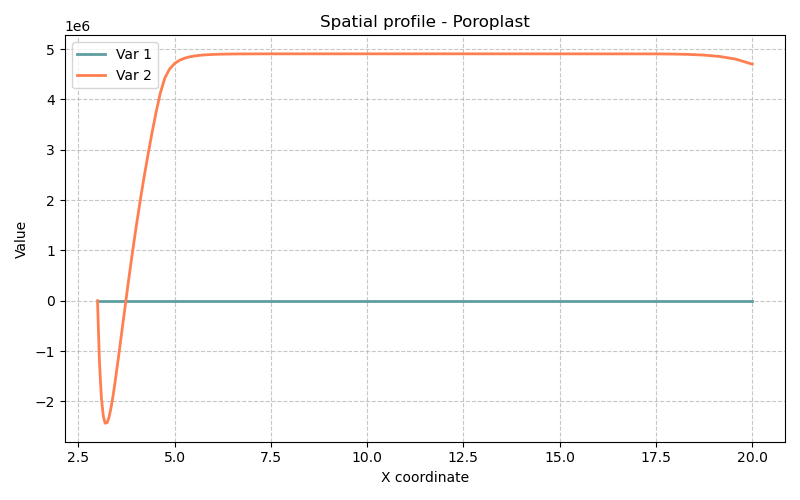

14 Modèle Poroplast — Poroélastoplasticité avec Écrouissage (Forage en Milieu Poreux Saturé)
Fichiers sources :
src/Models/ModelFiles/Poroplast.cpp·base/Poroplast/PoroplastAuteurs du modèle : P. Dangla (Université Gustave Eiffel)
14.1 Table des matières
- Contexte et objectif
- Hypothèses
- Variables et notation
- Modèle mathématique
- Conditions aux limites et initiales
- Cas test : Forage d’un puits dans une roche saturée (
base/Poroplast/) - Paramétrage matériel du modèle
- Description pas-à-pas des fichiers d’entrée
- Références bibliographiques
14.2 1. Contexte et objectif
Le modèle Poroplast étend le modèle de poroélasticité de Biot (cf. modèle M7) en introduisant un comportement plastique irréversible du squelette solide. C’est un modèle fondamental en géomécanique des roches et en mécanique des sols pour prédire :
- La zone de plastification (rupture) autour d’un forage (puits pétrolier, galerie de stockage nucléaire, tunnel) ;
- Le fluage différé dû à la dissipation de la pression de pore dans la zone endommagée ;
- Les déformations permanentes et la fermeture du puits au cours du temps.
Le cas test présenté ici simule l’excavation progressive d’un forage cylindrique dans un milieu poreux saturé soumis initialement à une contrainte isotrope (équilibre lithostique). L’excavation supprime le support mécanique sur le paroi interne, induisant une redistribution des contraintes pouvant dépasser la résistance du matériau.
graph TD
A["État initial:<br>σ₀ = -11.5 MPa (iso)<br>p_l0 = 4.7 MPa"] --> B["Excavation progressive<br>t ∈ [0, 1.5×10⁶ s]"]
B --> C{"f(σ') ≤ 0 ?"}
C -->|Oui : zone élastique| D["Réponse poroélastique<br>ε = ε^e, M7-like"]
C -->|Non : zone plastique| E["Retour radial Drucker-Prager<br>ε = ε^e + ε^p"]
E --> F["Porosité amplifiée<br>(β × tr(ε^p))"]
D --> G["Dissipation de p_l<br>par drainage (Darcy)"]
F --> G
G --> H["Tassement et fermeture<br>du puits"]14.3 2. Hypothèses
- Géométrie axisymétrique 1D : On se place dans un repère cylindrique \((r, \theta, z)\) avec invariance angulaire et verticale. Le problème est donc purement radial.
- Saturation complète : Le milieu est entièrement saturé en eau (\(S_l = 1\)). Pas de pression de gaz.
- Squelette élastoplastique isotrope : Le comportement élastique est linéaire (Lamé), le comportement plastique suit le critère de Drucker-Prager (adoucissement possible, ici sans écrouissage).
- Couplage de Biot généralisé : Deux coefficients de Biot sont introduits :
- \(b\) : coefficient de Biot élastique, intervenant dans la loi d’état mécanique ;
- \(\beta\) : coefficient de Biot plastique, modulant la contribution de la pression au seuil de plasticité dans la zone déformée plastiquement.
- Petites déformations : Formulation en déplacements linéarisés.
- Loi de Darcy : Le flux de fluide est proportionnel au gradient de pression, sans hystérésis de capillarité.
14.4 3. Variables et notation
Le modèle résout \(1 + \text{dim}\) équations couplées (1 hydraulique + dim mécaniques).
14.4.1 Inconnues primaires
| Symbole | Signification | Interne BIL |
|---|---|---|
| \(p_l\) | Pression du liquide interstitiel | p_l |
| \(\mathbf{u}\) | Vecteur déplacement du squelette solide | u_1 (axisym. 1D) |
14.4.2 Variables de comportement (aux points de Gauss)
| Symbole | Signification |
|---|---|
| \(\boldsymbol{\varepsilon}\) | Tenseur des déformations totales linéarisé |
| \(\boldsymbol{\varepsilon}^p\) | Tenseur des déformations plastiques |
| \(\boldsymbol{\sigma}\) | Tenseur des contraintes totales |
| \(\boldsymbol{\sigma}'\) | Contraintes effectives (au sens de Biot-plasticité) |
| \(\phi\) | Porosité courante (déformation + plasticité) |
| \(\gamma^p = \kappa\) | Variable d’écrouissage : déformation plastique déviatorique cumulée |
| \(\Delta\lambda\) | Multiplicateur plastique |
| \(f\) | Valeur de la fonction de charge (Drucker-Prager) |
14.5 4. Modèle mathématique
14.5.1 4.1 Équations d’équilibre et de conservation
Équilibre mécanique (quasi-statique) : \[\nabla \cdot \boldsymbol{\sigma} + (\rho_s + m_l)\,\mathbf{g} = \mathbf{0}\]
Conservation de la masse d’eau : \[\frac{\partial m_l}{\partial t} + \nabla \cdot \mathbf{W}_l = 0\]
avec la masse de liquide \(m_l = \rho_l\,\phi\) et le flux de Darcy : \[\mathbf{W}_l = -\frac{\rho_l\,k_\text{int}}{\mu_l}\,\nabla p_l + \frac{\rho_l^2\,k_\text{int}}{\mu_l}\,\mathbf{g}\]
14.5.2 4.2 Lois de comportement poroélastoplastique
Loi de Hooke–Biot avec plasticité :
\[\boldsymbol{\sigma} = \boldsymbol{\sigma}_0 + \mathbb{C} : (\boldsymbol{\varepsilon} - \boldsymbol{\varepsilon}^p) - b\,(p_l - p_{l0})\,\mathbf{I}\]
où \(\mathbb{C}\) est le tenseur de raideur isotrope de Lamé : \[C_{ijkl} = \lambda\,\delta_{ij}\delta_{kl} + \mu\,(\delta_{ik}\delta_{jl} + \delta_{il}\delta_{jk})\] avec \(\lambda = \frac{E\nu}{(1+\nu)(1-2\nu)}\) et \(\mu = \frac{E}{2(1+\nu)}\).
Évolution de la porosité (avec contribution plastique) : \[\phi = \phi_0 + b\,(\text{tr}\,\boldsymbol{\varepsilon} - \text{tr}\,\boldsymbol{\varepsilon}^p) + N\,(p_l - p_{l0}) + \beta\,\text{tr}\,\boldsymbol{\varepsilon}^p\]
Le terme \(\beta\,\text{tr}\,\boldsymbol{\varepsilon}^p\) traduit le fait que la dilatance plastique (ouverture des fissures et pores) contribue à la porosité de manière irréversible avec un coefficient \(\beta \neq b\).
Masse de liquide : \[m_l = \rho_l\,\phi, \qquad \rho_l = \rho_{l0}\left(1 + \frac{p_l - p_{l0}}{k_l}\right)\]
14.5.3 4.3 Critère de Drucker-Prager et algorithme de retour radial
Le modèle utilise le critère de Drucker-Prager sur les contraintes effectives (au sens plastique) : \[\boldsymbol{\sigma}' = \boldsymbol{\sigma} + \beta\,p_l\,\mathbf{I}\]
Fonction de charge : \[f(\boldsymbol{\sigma}') = q + \alpha_f\,p' - c_c \leq 0\]
avec : - \(p' = \frac{1}{3}\,\text{tr}\,\boldsymbol{\sigma}'\) : contrainte sphérique effective, - \(q = \sqrt{3\,J_2(\boldsymbol{\sigma}')}\) : contrainte déviatorique (mesure de Von Mises), - \(\alpha_f = \dfrac{6\sin\varphi}{3 - \sin\varphi}\), \(\quad c_c = \dfrac{6\cos\varphi}{3-\sin\varphi}\cdot c\) : paramètres du cône de DP en fonction de l’angle de frottement \(\varphi\) et de la cohésion \(c\).
Règle d’écoulement non-associée (potentiel plastique) : \[\dot{\boldsymbol{\varepsilon}}^p = \Delta\lambda\,\frac{\partial g}{\partial \boldsymbol{\sigma}'}, \qquad g(\boldsymbol{\sigma}') = q + \alpha_d\,p' \quad \text{(pas de terme de cohésion)}\] avec \(\alpha_d = \dfrac{6\sin\psi}{3-\sin\psi}\) et \(\psi\) l’angle de dilatance.
L’implémentation utilise l’algorithme de retour radial consistant (ReturnMapping) qui calcule \(\Delta\lambda\) en résolvant le problème de projection sur la surface de charge, puis met à jour les contraintes, déformations plastiques et le multiplicateur, fournissant la matrice tangente opérationnelle pour Newton-Raphson.
14.6 5. Conditions aux limites et initiales
14.6.1 État initial
- Pression interstitielle : \(p_l = p_{l0} = 4.7\) MPa (pression hydrostatique lithostique à profondeur).
- Contrainte totale : isotrope \(\boldsymbol{\sigma}_0 = -11.5\) MPa \(\cdot\mathbf{I}\) (compression lithostatique).
- Déformations plastiques : nulles (\(\boldsymbol{\varepsilon}^p_0 = 0\)).
14.6.2 Conditions aux limites
| Région | Type | Valeur initiale | Évolution |
|---|---|---|---|
| Paroi interne (Région 1) | Pression \(p_l\) | \(4.7\times10^6\) Pa | Réduite à \(0\) linéairement sur \([0,\,1.5\times10^6\,\text{s}]\) |
| Paroi interne (Région 1) | Force radiale | \(+11.5\times10^6\) Pa | Réduite à \(0\) linéairement (suppression du support d’excavation) |
| Frontière externe (Région 6) | Pression \(p_l\) | \(4.7\times10^6\) Pa | Constante (champ lointain) |
| Frontière externe (Région 6) | Force radiale | \(-11.5\times10^6\) Pa | Constante (confinement lithostatique) |
L’excavation est modélisée par une rampe temporelle (Function 1 : F(0)=1, F(1.5×10⁶)=0) qui réduit progressivement la pression et le soutènement interne de leur valeur initiale (état d’équilibre) vers zéro (paroi libre et drainée).
14.7 6. Cas test : Forage d’un puits dans une roche saturée (base/Poroplast/)
14.7.1 Géographie du problème
On simule le comportement d’une roche poreuse saturée autour d’un puits cylindrique dans un repère axisymétrique radial. Les principaux paramètres géométriques sont :
- Rayon du puits (paroi interne, Région 1) : bord intérieur du domaine radial.
- Distance de champ lointain (Région 6) : frontière externe à ~65 m du centre.
- Maillage 1D radial : 7 zones avec raffinement progressif près du puits (segments de 3 m, 3 m, 4 m) vers des éléments plus grossiers en champ lointain (20 m, 20 m).
14.7.2 Physique observée
Le problème se déroule en trois phases :
Phase transitoire d’excavation (\(t \in [0,\,1.5\times10^6\,\text{s}]\) ≈ 17 jours) :
La pression et le soutènement sur la paroi diminuent progressivement. Un gradient radial de pression se crée, forçant un écoulement vers l’intérieur (drainance). Simultanément, la redistribution des contraintes crée une zone plastifiée (anneau plastique) autour du puits là où \(f > 0\).Phase de consolidation (\(t \in [1.5\times10^6,\,50\times10^6\,\text{s}]\) ≈ 578 jours) :
L’excavation est terminée. La surpression interstitielle dans la zone endommagée se dissipe lentement (la roche est peu perméable : \(k_\text{int} = 10^{-19}\) m²). Cette dissipation transfère progressivement la contrainte totale vers le squelette solide, entraînant un déplacement radial différé (fermeture différée du puits).Phase de consolidation longue (\(t \approx 300\times10^6\,\text{s}]\) ≈ 9.5 ans) :
L’équilibre hydraulique est presque atteint. La distribution finale des pressions est quasi-stationnaire. Le déplacement radial maximal (convergence du puits) est atteint.
14.7.3 Sorties de simulation
Les 4 grandeurs tracées (fichier .gp) sont :
| Courbe | Colonnes .tN |
Signification physique |
|---|---|---|
| Déplacement radial \(u_r\) | col. 5 | Convergence du puits (fermeture) |
| Pression de pore \(p_l\) | col. 4 | Dissipation de la surpression interstitielle |
| Déformation plastique volumique | col. 20+24+28 | Trace de \(\boldsymbol{\varepsilon}^p\) dans la zone endommagée |
| Contrainte de cerclage effective \(\sigma'_{\theta\theta}\) | col. 19 + \(\beta\) × col. 4 | Évolution de l’état de contrainte effectif |

14.8 7. Paramétrage matériel du modèle
| Paramètre | Valeur | Rôle physique |
|---|---|---|
young |
5.8×10⁹ Pa | Module d’Young de la roche vide — rigidité élastique. |
poisson |
0.3 | Coefficient de Poisson — contraction latérale sous charge axiale. |
porosity |
0.15 | Porosité initiale \(\phi_0\) — volume de pores dans la roche. |
rho_s |
2350 kg/m³ | Masse volumique du squelette solide — force volumique gravitaire. |
rho_l |
1000 kg/m³ | Masse volumique de l’eau. |
p_l0 |
4.7×10⁶ Pa | Pression initiale d’équilibre (\(\approx\) 470 m de profondeur). |
k_l |
2×10⁹ Pa | Module de compressibilité de l’eau (quasi-incompressible). |
k_int |
1×10⁻¹⁹ m² | Perméabilité intrinsèque très faible (roche tight). |
mu_l |
0.001 Pa·s | Viscosité dynamique de l’eau à 20°C. |
b |
0.8 | Coefficient de Biot élastique (\(b < 1\) : grains partiellement compressibles). |
N |
4×10⁻¹¹ Pa⁻¹ | Compressibilité des pores (stockage Biot). |
cohesion |
1×10⁶ Pa | Cohésion \(c\) de la roche en cisaillement pur. |
friction |
25° | Angle de frottement interne \(\varphi\) (Drucker-Prager). |
dilatancy |
25° | Angle de dilatance \(\psi\) (= \(\varphi\) : écoulement associé ici). |
beta |
0.8 | Coefficient de Biot plastique — contribution irréversible de la pression au critère. |
sig0_11,22,33 |
−11.5×10⁶ Pa | Contrainte totale lithostatique initiale isotrope. |
14.9 8. Description pas-à-pas des fichiers d’entrée
14.9.1 8.1 Bloc Geometry
Geometry
1 axis1: problème en dimension 1 (radial uniquement).axis: géométrie axisymétrique cylindrique (le degré de liberté est la composante radiale \(u_r\) ; les composantes \(u_\theta, u_z\) sont nulles par symétrie). Cette déclaration active les termes géométriques en \(1/r\) dans les opérateurs différentiels (divergence, gradient).
14.9.2 8.2 Bloc Mesh
Mesh
7 3. 3. 4. 5. 10. 20. 20.
0.05
1 20 10 40 30 1
1 1 1 1 1 1- Ligne 1 :
7zones radiales avec des longueurs respectives de 3, 3, 4, 5, 10, 20, 20 m. La distance totale modélisée est \(3+3+4+5+10+20+20 = 65\) m depuis la paroi du puits. - Ligne 2 :
0.05— taille d’élément de référence (en mètres), garantissant une bonne résolution dans les zones de fort gradient de contrainte proche du puits. - Ligne 3 :
1 20 10 40 30 1— nombre d’éléments dans chaque zone de subdivision. La zone 2 (3 m) contient 20 éléments (Δr = 0.15 m, maillage fin), les zones lointaines sont plus grossières. Le total donne environ 102 éléments. - Ligne 4 :
1 1 1 1 1 1— indice de région associé à chaque zone de maillage. Ici toutes les cellules appartiennent à la région matérielle 1.
La numérotation des régions aux bords (Régions 1 et 6) est générée automatiquement aux deux extrémités du domaine 1D par BIL, correspondant respectivement à la paroi du puits (r minimal) et au champ lointain (r maximal).
14.9.3 8.3 Bloc Material
Material
Model = Poroplast
gravity = 0
rho_s = 2350
young = 5.8e+09
...
cohesion = 1e+06
friction = 25
dilatancy = 25
beta = 0.8
sig0_11 = -11.5e6
sig0_22 = -11.5e6
sig0_33 = -11.5e6Model = Poroplast: sélectionne le modèle poroélastoplastique (chargement du.cppcorrespondant).gravity = 0: le champ de gravité est désactivé — on étudie le comportement pur dû au déconfinement latéral, sans gradient vertical de contrainte propre.sig0_11/22/33 = -11.5e6: définit l’état de contrainte initiale isotrope (convention de signe : négatif = compression). BIL litsig0_ijcomme \(\sigma_{ij}^0\) dans l’ordre composante-ligne (11=radial, 22=tangentiel, 33=axial).- Le modèle Drucker-Prager est activé automatiquement par la présence des paramètres
cohesion,friction,dilatancydansReadMatProp(cf.src/Models/ModelFiles/Poroplast.cpp:325).
14.9.4 8.4 Bloc Fields
Fields
3
Value = 4.7e6 Gradient = 0 Point = 0
Value = 11.5e6 Gradient = 0. Point = 0.
Value = -11.5e6 Gradient = 0. Point = 0.Définit 3 champs scalaires constants (gradient nul sur tout le domaine) :
| Champ | Valeur | Utilisation |
|---|---|---|
| Field 1 | 4.7 MPa | Pression initiale d’eau — condition initiale et CL hydraulique |
| Field 2 | +11.5 MPa | Force de compression positive — soutènement initial à la paroi interne |
| Field 3 | −11.5 MPa | Force de compression négative — confinement du champ lointain |
14.9.5 8.5 Bloc Initialization
Initialization
4
Region = 2 Unknown = p_l Field = 1
Region = 3 Unknown = p_l Field = 1
Region = 4 Unknown = p_l Field = 1
Region = 5 Unknown = p_l Field = 1Initialise la pression \(p_l\) à la valeur du Field 1 (4.7 MPa) dans toutes les régions intérieures 2 à 5. Les régions 1 et 6 (bords) sont pilotées par les conditions aux limites ci-dessous. Cette initialisation crée un état d’équilibre isobare (\(\nabla p_l = 0\)) cohérent avec l’état de contrainte initial isotrope.
14.9.6 8.6 Bloc Functions
Functions
1
N = 2 F(0.) = 1. F(1.5e6) = 0.Définit une Function 1 : rampe linéaire décroissante de 1 à 0 entre \(t = 0\) et \(t = 1.5\times10^6\) s. Cette fonction est le multiplicateur temporel appliqué aux conditions aux limites de la paroi interne, modélisant l’excavation progressive (retrait graduel du soutènement).
Function 0 (implicite dans BIL) = multiplicateur constant = 1 (condition toujours active à sa valeur nominale).
14.9.7 8.7 Bloc Boundary Conditions
Boundary Conditions
2
Region = 1 Unknown = p_l Field = 1 Function = 1
Region = 6 Unknown = p_l Field = 1 Function = 0| Région | Inconnue | Valeur imposée | Évolution |
|---|---|---|---|
| Région 1 (paroi) | p_l |
Field 1 = 4.7 MPa | × Function 1 → \(4.7\) MPa à \(0\) en \(1.5\times10^6\) s |
| Région 6 (champ lointain) | p_l |
Field 1 = 4.7 MPa | × Function 0 = constant |
La paroi interne est donc initialement imperméable puis se draine progressivement (drain parfait en fin d’excavation, \(p_l = 0\)). Le champ lointain maintient la pression lithostatique d’origine.
14.9.8 8.8 Bloc Loads
Loads
2
Region = 1 Equation = meca_1 Type = force Field = 2 Function = 1
Region = 6 Equation = meca_1 Type = force Field = 3 Function = 0| Région | Équation | Type | Valeur | Évolution |
|---|---|---|---|---|
| Région 1 (paroi) | meca_1 |
force | Field 2 = +11.5 MPa | Réduit à 0 (excavation) |
| Région 6 (lointain) | meca_1 |
force | Field 3 = −11.5 MPa | Constant (confinement) |
La force de +11.5 MPa sur la paroi interne représente initialement la réaction du sol avant excavation (état d’équilibre avec le soutènement naturel). En la réduisant à zéro, on simule la mise en charge de la roche environnante due à la création du vide. La force de −11.5 MPa sur la frontière externe est la contrainte de compression du champ lointain (signe négatif = compression dans la convention BIL pour les forces surfaciques).
14.9.9 8.9 Bloc Dates et contrôle temporel
Dates
4
0. 1.5e6 50.e6 300.e6| Date | Valeur | Signification |
|---|---|---|
| 0 | \(t = 0\) | État initial |
| \(1.5\times10^6\) s | ≈ 17 jours | Fin de l’excavation (pression interne = 0) |
| \(50\times10^6\) s | ≈ 1.6 ans | Consolidation partielle, début de drainage étendu |
| \(300\times10^6\) s | ≈ 9.5 ans | Équilibre hydraulique quasi-atteint |
Objective Variations
u_1 = 1.e-3
p_l = 1.e5Critères de convergence adaptatifs : un pas de temps est acceptable si la variation relative de déplacement est < \(10^{-3}\) m et celle de pression < \(10^5\) Pa entre deux itérations.
Time Steps
Dtini = 1.e3
Dtmax = 1.e8 Pas de temps initial très petit (1000 s) car les chocs mécaniques dus à l’excavation sont brusques. Le pas de temps peut ensuite croître jusqu’à \(10^8\) s lorsque l’état devient quasi-stationnaire.
14.10 9. Références bibliographiques
- Biot, M. A. (1941). General theory of three-dimensional consolidation. Journal of Applied Physics, 12(2), 155–164. — Fondation du couplage hydromécanique élastique.
- Coussy, O. (2004). Poromechanics. John Wiley & Sons. — Extension aux milieux non-saturés et aux déformations plastiques. Introduce les coefficients \(b\), \(N\) et \(\beta\).
- Drucker, D. C. & Prager, W. (1952). Soil mechanics and plastic analysis or limit design. Quarterly of Applied Mathematics, 10(2), 157–165. — Critère de plasticité de Drucker-Prager utilisé pour la roche.
- Detournay, E. & Cheng, A. H.-D. (1993). Fundamentals of poroelasticity. Comprehensive Rock Engineering, 2, 113–171. — Référence de base pour la poroélasticité appliquée au forage.
- Charlez, P. A. (1991). Rock Mechanics — Vol. 1: Theoretical Fundamentals. Éditions Technip. — Présentation de la stabilité des puits dans les milieux poreux.
- Dangla, P. — Documentation interne BIL, Poroplasticity with hardening (2019). — Modèle Poroplast, titre enregistré dans
TITLEdu fichier source.